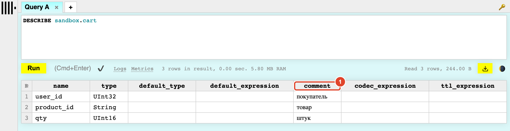
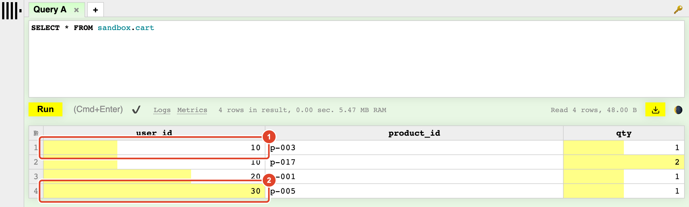
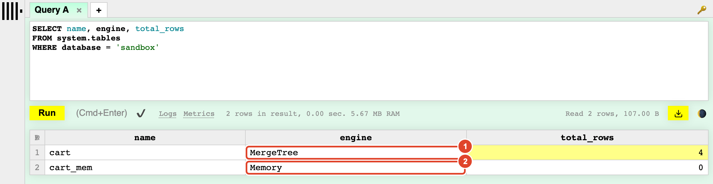

Движок таблицыtable engine
Способ хранения строк таблицы: где они лежат, в каком порядке, что происходит при вставке и чтении. Задаётся в ENGINE =.
ПримерENGINE = MergeTree, ENGINE = Memory.
Где§1, §2
Справочник по ClickHouse · модуль 1 · первые данные
Глава 1.4
В главе — команда CREATE TABLE по частям и движок таблицы: способ, которым сервер хранит строки. Создадим одну и ту же таблицу на двух движках, Memory и MergeTree, и посмотрим, чем они различаются при чтении и после перезапуска сервера.
Суть за две минуты
В CREATE TABLE перечисляют столбцы с типами и пишут ENGINE — как хранить строки.
Для работы почти всегда берут MergeTree.
Строки на диске лежат отсортированными по ключу ORDER BY.
Вставили 30, 10, 20 — прочитали 10, 20, 30.
Таблица Memory держит строки только в оперативной памяти.
После перезапуска сервера: MergeTree — 4 строки, Memory — 0.
Зачем это знатьВ главе 1.1 у всех таблиц стенда в system.tables стояло engine = MergeTree. Разберёмся, что это за столбец.
Столбцы и типы говорят, что лежит в таблице. Движок говорит, как это лежит: в памяти или на диске, в каком порядке, что происходит при вставке и при чтении. Движок выбирают один раз при создании таблицы.
Что есть что: стол — оперативная память, шкаф — диск. Вечерняя уборка — перезапуск сервера. Алфавит картотеки — ключ ORDER BY.
Движков в ClickHouse десятки. Книга почти всё время работает с семейством MergeTree — его разбирает модуль 3. В этой главе к нему добавим отдельный движок — Memory, чтобы увидеть разницу.
Сначала сравним место хранения и судьбу строк после перезапуска. Это поможет читать следующие команды как описание поведения таблицы.
На схеме таблица получает один из двух способов хранения. Для Memory стрелка заканчивается в оперативной памяти. Для MergeTree показаны диск и ключ сортировки; из этого пути следует сохранность строк после перезапуска. Теперь разберём, как эти части записываются в CREATE TABLE.
Зачем это знатьВ главе 1.3 таблицу sandbox.visits мы создали готовой командой. Теперь разберём её устройство на новой таблице — корзине покупателей.
sandbox: эталонные базы стенда не трогаем.DEFAULT из 1.3 и COMMENT — пояснение для людей.system.tables.Переносы строк и отступы серверу не важны, они для читателя. Запятая после последнего столбца не ставится.
Зачем этот шагСоздаём корзину: кто положил, какой товар и сколько штук. Ключ — покупатель, затем товар.
ДелаемCREATE TABLE sandbox.cart (
user_id UInt32 COMMENT 'покупатель',
product_id String COMMENT 'товар',
qty UInt16 COMMENT 'штук'
)
ENGINE = MergeTree
ORDER BY (user_id, product_id)
COMMENT 'корзины покупателей'Ответ на CREATE не содержит строк. Нет ошибки — значит, таблица создана. Проверим, что получилось:
DESCRIBE sandbox.cart

DESCRIBE показал три столбца с типами, а в колонке comment (рамка 1) — «покупатель», «товар», «штук». В главе 1.1 эта колонка была пустой.
Зачем этот шагПосмотрим, что делает с порядком строк ключ ORDER BY. Вставим четыре строки нарочно не по порядку покупателей.
INSERT INTO sandbox.cart VALUES
(30, 'p-005', 1), (10, 'p-017', 2), (20, 'p-001', 1), (10, 'p-003', 1)SELECT * FROM sandbox.cart

MergeTree при каждой вставке раскладывает строки по ключу ORDER BY и в таком виде пишет на диск. Ключ из двух столбцов работает как словарь: сначала по первой букве, при равенстве — по второй. У покупателя 10 два товара, и между собой они идут по product_id.
первая строка — 10, p-003, последняя — 30, p-005.
Нет. Каждая вставка ложится на диск отдельной отсортированной частью. Две вставки — две части, и при чтении сервер может выдать сначала одну, потом другую. Позже он сливает части в одну, отсюда и название Merge Tree — «дерево слияний». Порядок в ответе гарантирует только ORDER BY в самом запросе SELECT — глава 1.6. Части и слияния подробно разбирает глава 3.2.
Зачем этот шагСравним с движком, который ничего не сортирует и не пишет на диск.
ДелаемCREATE TABLE sandbox.cart_mem (user_id UInt32, product_id String, qty UInt16) ENGINE = Memory
INSERT INTO sandbox.cart_mem VALUES
(30, 'p-005', 1), (10, 'p-017', 2), (20, 'p-001', 1), (10, 'p-003', 1)SELECT * FROM sandbox.cart_mem
┌─user_id─┬─product_id─┬─qty─┐ 1. │ 30 │ p-005 │ 1 │ 2. │ 10 │ p-017 │ 2 │ 3. │ 20 │ p-001 │ 1 │ 4. │ 10 │ p-003 │ 1 │ └─────────┴────────────┴─────┘
У Memory нет ORDER BY: строки лежат в том порядке, в каком пришли. Хранятся они в оперативной памяти сервера.
Сравним входной порядок с результатом чтения. Здесь запрос не сортирует строки, поэтому виден порядок, который сохранил Memory.
На схеме четыре строки проходят через Memory без сортировки. Поэтому результат повторяет последовательность 30, 10, 20, 10. После перезапуска этот набор исчезнет; проверим это отдельно.
строки в порядке вставки: 30, 10, 20, 10.
Зачем этот шагПроверим основное отличие: что останется в таблицах, если сервер перезапустится — после обновления, сбоя или перезагрузки компьютера.
Делаемdocker compose restart clickhouse
Container course-clickhouse Restarting Container course-clickhouse Started
SELECT name, engine, total_rows FROM system.tables WHERE database = 'sandbox'

у cart — 4, у cart_mem — 0. Сама таблица Memory осталась: её описание сервер хранит на диске. Пропали только строки.
Зачем это знатьСводим опыт в правило выбора.
| Memory | MergeTree | |
|---|---|---|
| где строки | в оперативной памяти | на диске, сжатые |
| после перезапуска | пусто | всё на месте |
| порядок хранения | как вставили | по ключу ORDER BY |
| сколько данных | сколько поместится в память | миллиарды строк |
| когда брать | маленький временный справочник, опыты | всё остальное |
вы выбираете MergeTree, если данные нужны завтра. Все таблицы стенда — MergeTree.
Зачем этот шагКлюч сортировки влияет на скорость поиска в MergeTree. От него зависит, какие участки таблицы сервер сможет пропустить.
Строки, отсортированные по ключу, похожи на словарь: слово на «М» ищут, открыв середину книги. Так сервер по ключу пропускает фрагменты таблицы, где нужных строк точно нет. Как именно — глава 3.3. Пока правило: в ключ ставят столбцы, по которым чаще всего отбирают строки.
| Таблица стенда | Ключ | Частый вопрос |
|---|---|---|
shop.products | ORDER BY product_id | найти товар по номеру |
sandbox.cart | ORDER BY (user_id, product_id) | корзина одного покупателя |
web.events | ORDER BY (event_type, event_time) | все покупки за период |
Если сортировать незачем, пишут ORDER BY tuple() — «пустой ключ»: строки лежат в порядке вставки.
для sandbox.cart вы можете объяснить ключ: корзину почти всегда открывают для одного покупателя.
Сервер 26.8 создаст таблицу без ошибки и сам допишет ORDER BY tuple() — так велит его настройка create_table_empty_primary_key_by_default, по умолчанию она включена. Проверить можно командой SHOW CREATE TABLE. Таблица без ключа работает, но сервер не сможет пропускать куски при поиске. В старых версиях ClickHouse без ORDER BY была ошибка, поэтому в книге ключ пишется всегда.
В ключ нельзя ставить Nullable-столбец — об этом глава 1.3. Выбор ключа на настоящих замерах — глава 3.4.
Зачем это знатьТри варианта команды, которые часто встречаются в скриптах.
CREATE TABLE IF NOT EXISTS sandbox.cart (…)Создать, только если таблицы ещё нет. Если есть — ничего не делать и не выдавать ошибку.
CREATE TABLE sandbox.cart2 AS sandbox.cartПустая таблица с теми же столбцами, движком и ключом.
SHOW CREATE TABLE sandbox.cartПоказать команду, которой таблицу можно создать заново.
Сопоставим три формы по результату: первая защищает повторный запуск, вторая переносит устройство без строк, третья только показывает описание.
CREATE TABLE sandbox.cart
(
`user_id` UInt32 COMMENT 'покупатель',
`product_id` String COMMENT 'товар',
`qty` UInt16 COMMENT 'штук'
)
ENGINE = MergeTree
ORDER BY (user_id, product_id)
SETTINGS index_granularity = 8192
COMMENT 'корзины покупателей'Сервер добавил то, чего мы не писали: обратные кавычки вокруг имён и строку SETTINGS index_granularity = 8192. Это число — по сколько строк MergeTree группирует данные для поиска, глава 3.3. В обратные кавычки берут имя, если в нём пробел или оно совпадает с командой SQL.
Таблица sandbox.cart2 после CREATE TABLE … AS пустая: SELECT count() FROM sandbox.cart2 → 0. Скопировать строки — глава 1.5.
Найдите строку, похожую на то, что видите у себя, и раскройте её.
Вы создали её раньше. Работайте с ней, удалите (DROP TABLE sandbox.cart, глава 1.8) или добавьте IF NOT EXISTS.
В ORDER BY можно ставить только столбцы этой таблицы. В конце сообщения — список доступных: служебные с подчёркиванием и ваши.
Имена типов чувствительны к регистру: правильно UInt16. Сервер подсказывает правильное.
Запрос был (id UInt32 qty UInt16). После типа сервер ждал запятую (Comma) или скобку, а встретил qty.
Столбец ключа должен быть обычного типа — глава 1.3.
Сервер перезапускался: Memory держит строки только в памяти (§6). Для данных, которые нужны дольше, — MergeTree.
Вставок было несколько, и части ещё не слились. Нужен порядок — допишите ORDER BY в SELECT.
ENGINE = MergeTree и ключ ORDER BY. Сервер 26.8 допишет пустой ключ сам, но писать его стоит всегда — от ключа зависит скорость поиска.
ORDER BY qty строки с qty 5, 1, 3 одной вставкой. В каком порядке их вернёт SELECT *?1, 3, 5: одна вставка ложится на диск одной частью, отсортированной по ключу. Но гарантирует порядок только ORDER BY в запросе.
Описание таблицы — имя, столбцы, движок — сервер хранит на диске. Строки Memory держит только в оперативной памяти, а она при перезапуске очищается.
ORDER BY (sensor_id, ts): сначала датчик, внутри него — время. Тогда показания одного датчика лежат рядом и по времени.
CREATE TABLE sandbox.t (
id UInt32 COMMENT 'номер',
…
) ENGINE = MergeTree
ORDER BY id
CREATE TABLE sandbox.t (…)
ENGINE = Memory
CREATE TABLE IF NOT EXISTS …
CREATE TABLE t2 AS t1
ORDER BY tuple() -- без ключа
DESCRIBE sandbox.t
SHOW CREATE TABLE sandbox.t
docker compose restart clickhouse
Способ хранения строк таблицы: где они лежат, в каком порядке, что происходит при вставке и чтении. Задаётся в ENGINE =.
ПримерENGINE = MergeTree, ENGINE = Memory.
Где§1, §2
Основной движок ClickHouse. Хранит строки на диске частями, каждая часть отсортирована по ключу ORDER BY; позже части сливаются.
Примервсе таблицы стенда: shop.products, web.events.
Где§3, §4, модуль 3
Движок, который держит строки в оперативной памяти в порядке вставки. После перезапуска сервера таблица остаётся пустой.
Примерsandbox.cart_mem: 4 строки до перезапуска, 0 после.
Где§5, §6
Столбцы, по которым MergeTree упорядочивает строки на диске. Сначала строки упорядочены по первому столбцу, при равенстве — по следующему.
ПримерORDER BY (user_id, product_id); без ключа — ORDER BY tuple().
Где§4, §8, глава 3.3
Порция строк, которую MergeTree записал на диск за одну вставку, уже отсортированная по ключу. Части со временем сливаются.
Пример4 строки sandbox.cart — одна часть all_1_1_0.
Где§4, глава 3.2
CREATE TABLE база.имя (столбцы) ENGINE = … ORDER BY …; у столбцов и таблицы может быть COMMENT.ORDER BY.ORDER BY tuple().Дальше — следующая глава модуля: как вставлять строки — по одной, пачкой и из другой таблицы — и почему ClickHouse любит пачки.